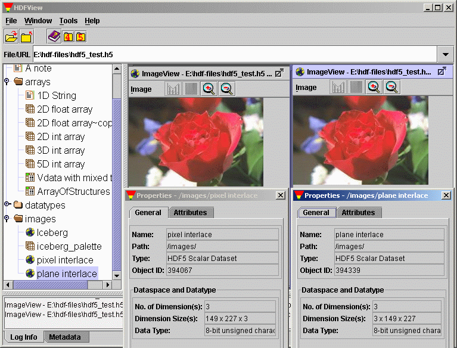
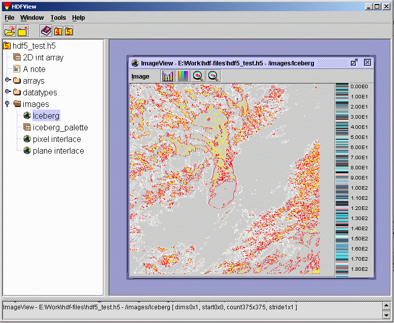
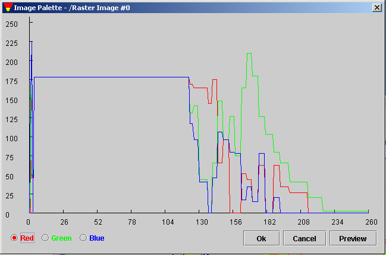
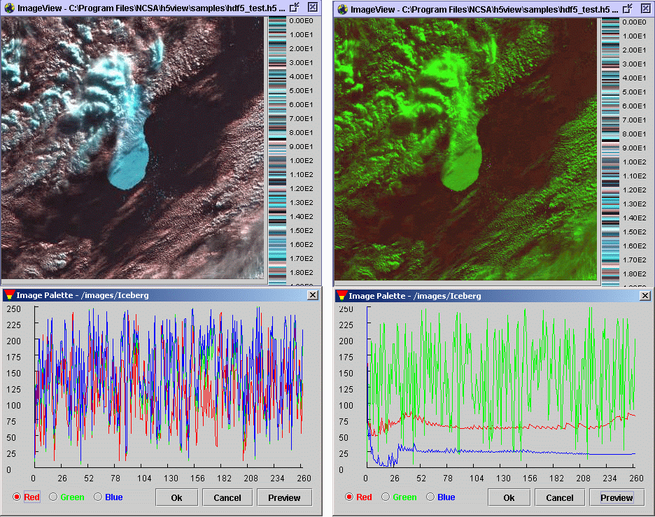
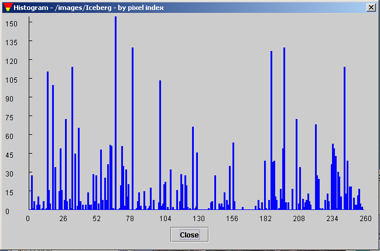

Mapping of Dataset Values to Image Pixels
An HDF4 image is raster image of 8-bit pixels with and indexed RGB color table, or a 24-bit true color image. HDF4 library provides image APIs to access image data and color table.
An HDF5 image is a dataset that confirms the HDF5 Image Specification. HDFView supports two types of images: indexed and true color. Both indexed image and true color image have predefined attributes and data layout according to the HDF5 image specification. For more details about HDF5 image, see the HDF5 Image Specification.
An indexed image is one of the following:
The dataset is displayed as a Java image using IndexColorModel. The dataset is converted to a raster image using the first palette specified by the PALETTE attribute, or the default palette for HDF4. Multiple user defined palettes (i.e., the PALETTE attribute may be a list) are not supported in version 1.0.
The dataset of an indexed image holds the values of indices of the color lookup table (palette). The dataset is converted into image pixels by looking up the color table. The following figure is an example of mapping dataset values into pixels.
Mapping of Dataset Values to Image Pixels
For a two dimensional indexed image HDFView assumes that the width of the image is the size of second dimension and the height of the image is the first dimension, i.e. dim[0]=height and dim[1]=width.
Although HDFView displays the entire image by the order of (dim[0], dim[1], dim[2])=(depth, height, width) by default, you can always change the order and select a subset for display as discussed in Chpater 5.
HDFView also displays a three dimensional array as an array of 2D images arranged along the third dimension, i.e. dim[0]=depth, dim[1]=height and dim[2]=width. You can flip back and forth to look at images at different position of the depth dimension. For instance, if the dataset is 20 x 400 x 600 (dim[0]=20, dim[1]=400, and dim[2]=600), HDFView will display it as 20 images each with the size of 600 x 400 (width is 600, height is 400). However, A three-dimension image of [1][height][width] or [height][width][1] is treated as a two-dimension indexed image of [height][width].
A 2D or 3D SDS or HDF5 dataset with integer or float data can be displayed as an indexed image using the "Open As" selection from the Object menu. Since the dataset does not have a palette, a default palette is used. The palette is chosen from the "Select Palette" menu in the "Dataset Selection" window. The predefined palettes include:
Following HDF4 terminology, the data may be interlaced by pixel or by plane. For an HDF5 Image dataset the interlace should be indicated by the INTERLACE_MODE attribute. In both cases, the dataset will have a dataspace with three dimensions, height, width, and components. For pixel interlace the data is arranged by the order of [height][width][pixel components]. For plane interlace the data is arranged by the order [pixel components][height][width].
The translation from pixel values to color components for display or processing purposes is a one-to-one correspondence of data values to components. Data of RGB color components is converted into byte data, which is packed into single int pixel. The Java Image is created with a DirectColorModel, with masks to define packed samples. This color model is similar to an X11 TrueColor visual. The default RGB ColorModel specified with the following parameters:
Number of bits: 32 Red mask: 0x00ff0000 Green mask: 0x0000ff00 Blue mask: 0x000000ff Alpha mask: 0xff000000 Color space: sRGB isAlphaPremultiplied: False Transparency: Transparency.TRANSLUCENT transferType: DataBuffer.TYPE_INTThe following figure shows examples of true color images. The image on the left is pixel interleaving with dimensions of [149][227][3]. The image on the right is plane interleaving with dimensions of [3][149][227].

True Color Image Displayed in the Image View
You can also flip an image horizontally or verticaly. Flipping an image will change the coordinates of the image. This can be used to adjust images that may have been created with different origins that the defaults.
The "contour" creates a contour plot of the pixel values. The contour can have from three to nine contour levels. Level three has less details of contour and level nine has more details of the contour. Repeated contour operation shows the accumulated effect of contouring. For example, if you do contouring with level 3 and then do contouring with level 4 on the same image, the final image shows the the effect of contouring with level 4 of the contour image with level 3.
The following shows an contour image of level nine.

Contour Image
Although the HDF5 palette specification allows for variable color length, different look-up methods and color models beyond RGB, HDFView only supports the indexed RGB color model of 256 colors. Clicking the palette icon from the tool bar or selecting the palette command from the image menu, you can also see the red, green and blue components of the color table are ploted in a line plot.

Image Palette (256 Colors)
To view pixel values of each individual point, check the "Show value" item in the "Image" menu. When you move the mouse over the image, the pixel values of the mouse point are shown at the bottom of the image.
You can modify the values of color table. Select the color (red, green or blue) in the palette view and drag line of selected color. The value of selected color changes as you move the color line. In the following figure, the image on the left is the orginal image and the image on the right is the image with modified color table.

Modified Image Palette (256 Colors)

Histogram of Pixel Values